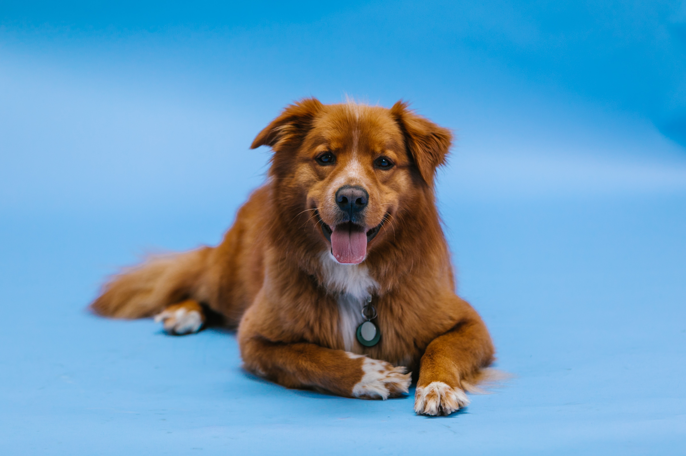
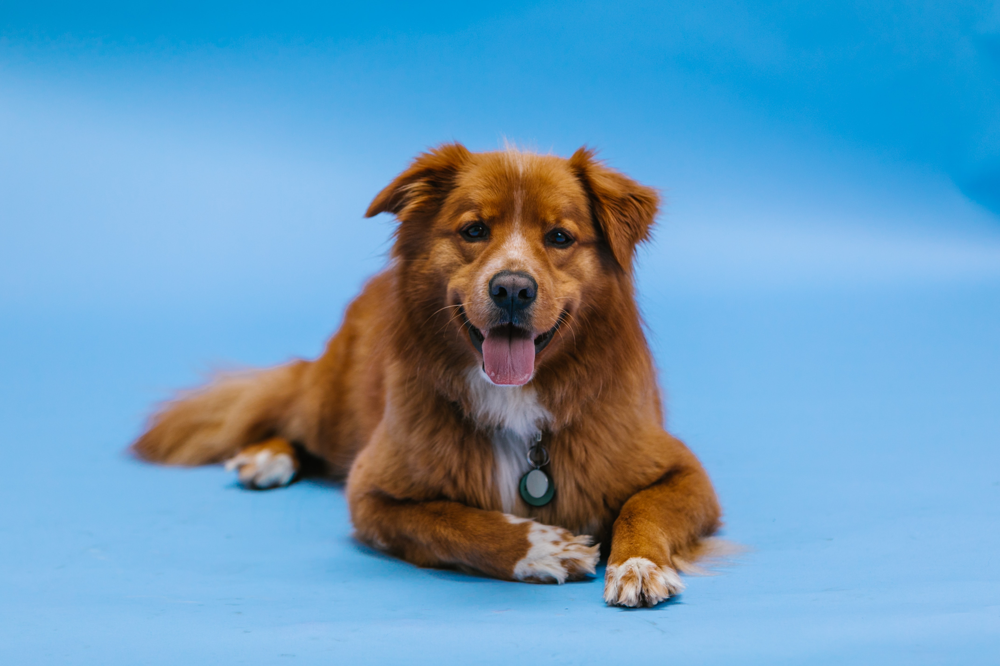
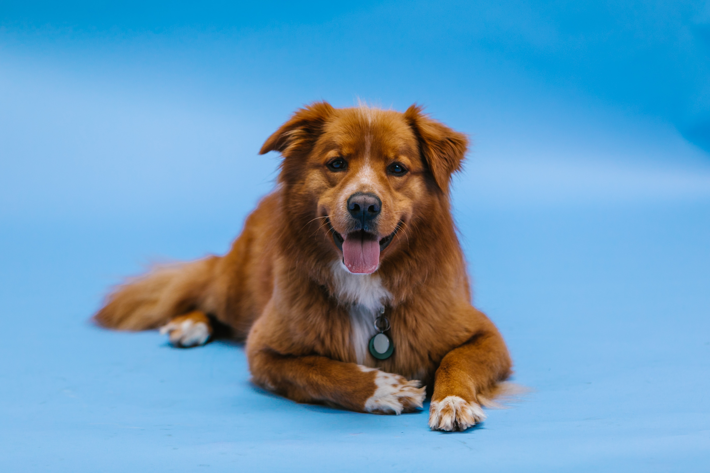

Photos


 



I am Clara Chepngeno Metto, student at Moringa School pursuing Software Engineering.
My website is all about the things i like in a photographic form, it displays different aspects of my likes both indoors and outdoors.
Here is a list of pictures on what i love and expresses who Clara is, i am glad that you are getting to know me better.


The group is made up of three members, Mordci Mwinyi who is the lead singer, Wachira Gatawa who is the poet and Kenneth Muya the guitarist.Clinging on to a vision of changing the world with their art, these three versatile artists Mordecai Mwini Kimeu, Wachira Gatama and Kenneth Muya Mukhwana have defied all odds against them to be labelled as one of the best bands in Kenya and East Africa. With time, they have artistically flourished into a revolutionary force not only in their musical poetic presentation but also in their conspicuously fashionable sense of futuristic style.